SOMEDAY · TOUTES LES SAISONS
Le vidéoclub
Toutes les cassettes, saison par saison. Les épisodes en ligne d'abord, puis ce qui arrive bientôt sur l'étagère.
Aucune cassette ne correspond. Essayez un autre nom.
Saison 1
12 / 12 ÉPISODES EN LIGNE ▶ PLAY
▶ PLAYHarley Davidson et l'homme aux santiagsHarley Davidson and the Marlboro Man
1991 — Simon Wincer · Mickey Rourke, Don Johnson
 ▶ PLAY
▶ PLAYJoshua Tree
1993 — Vic Armstrong · Dolph Lundgren
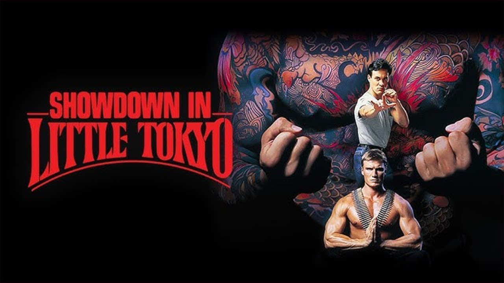
▶ PLAYShowdown in Little Tokyo
1991 — Mark L. Lester · Dolph Lundgren, Brandon Lee
 ▶ PLAY
▶ PLAYRapid Fire
1992 — Dwight H. Little · Brandon Lee
 ▶ PLAY
▶ PLAYEspion JuniorIf Looks Could Kill
1991 — William Dear · Richard Grieco
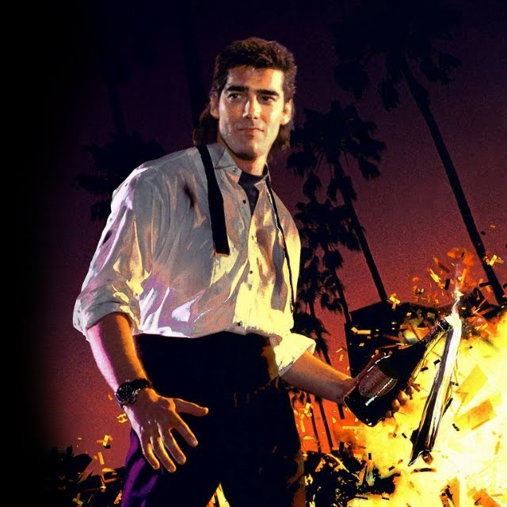
▶ PLAYLa Prise de Beverly HillsThe Taking of Beverly Hills
1991 — Sidney J. Furie · Ken Wahl
 ▶ PLAY
▶ PLAYGuet-ApensThe Getaway
1994 — Roger Donaldson · Alec Baldwin, Kim Basinger
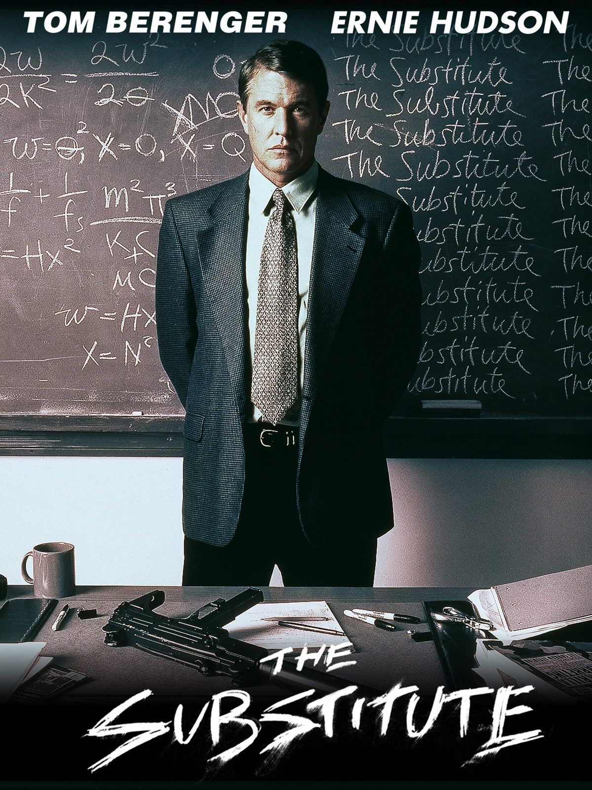
▶ PLAYThe Substitute
1996 — Robert Mandel · Tom Berenger
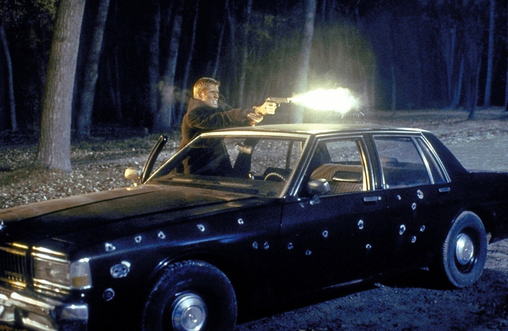
▶ PLAYBlackJack
1998 — John Woo · Dolph Lundgren
 ▶ PLAY
▶ PLAY3000 Miles to Graceland
2001 — Demian Lichtenstein · Kurt Russell, Kevin Costner
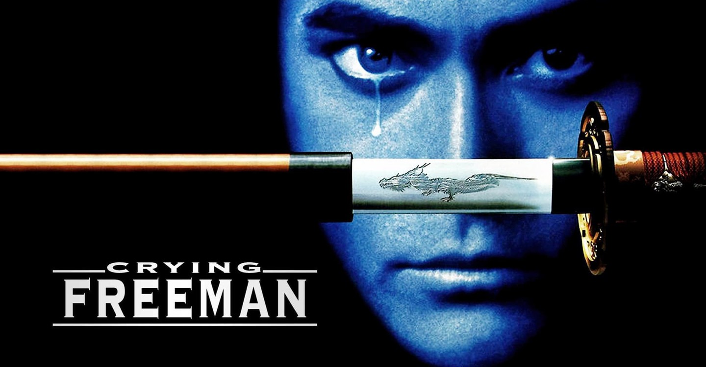
▶ PLAYCrying Freeman
1995 — Christophe Gans · Mark Dacascos
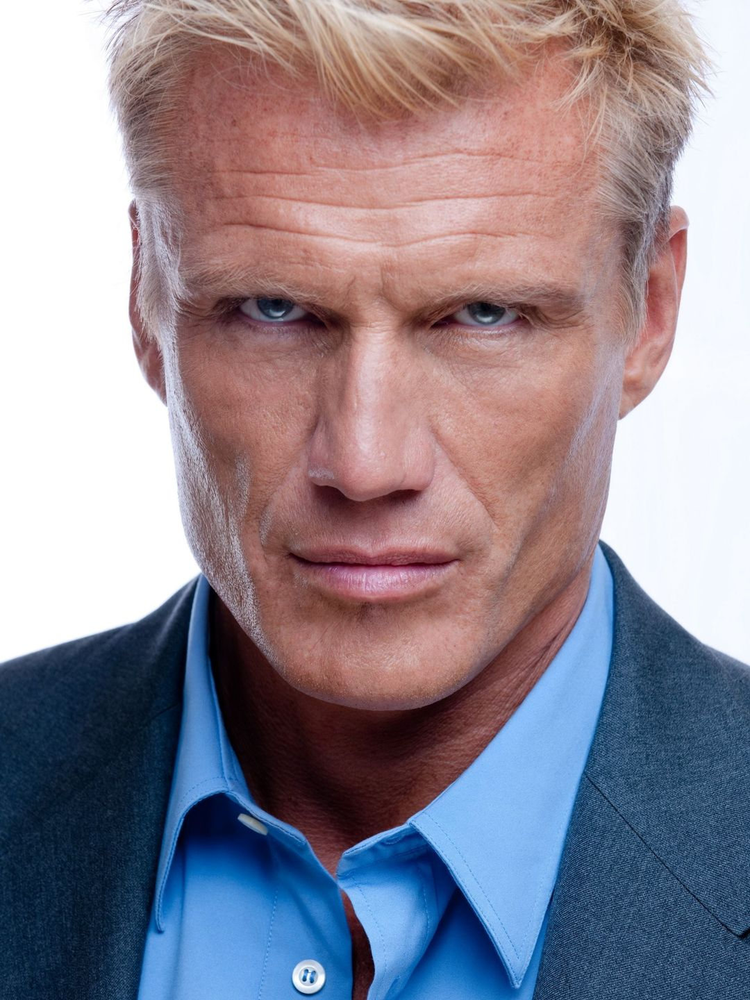
▶ PLAYPortrait — Dolph Lundgren
1987–1998 — Épisode spécial · 12–15 min
Saison Spéciale — Les Suites
6 / 6 ÉPISODES EN LIGNE ▶ PLAY
▶ PLAYDie Hard 2
1990 — Renny Harlin · Bruce Willis
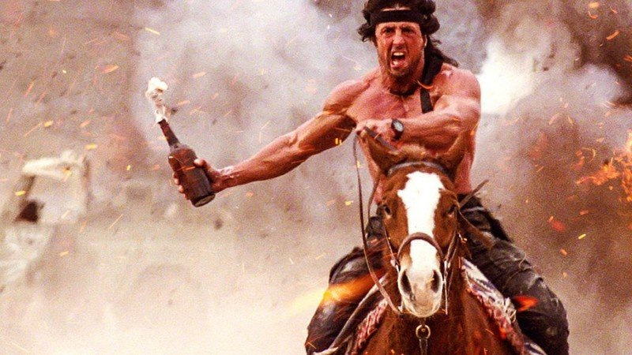
▶ PLAYRambo 3
1988 — Peter MacDonald · Sylvester Stallone
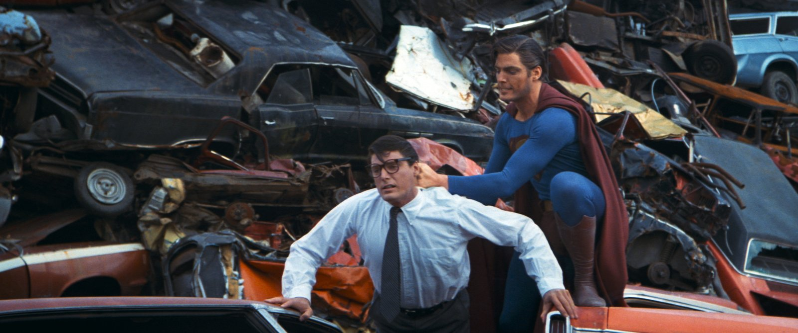
▶ PLAYSuperman III
1983 — Richard Lester · Christopher Reeve, Richard Pryor
 ▶ PLAY
▶ PLAYL'Arme Fatale 3
1992 — Richard Donner · Mel Gibson, Danny Glover
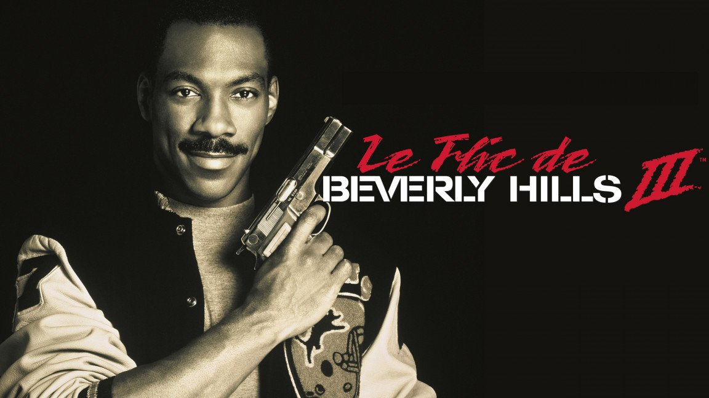
▶ PLAYLe Flic de Beverly Hills 3
1994 — John Landis · Eddie Murphy
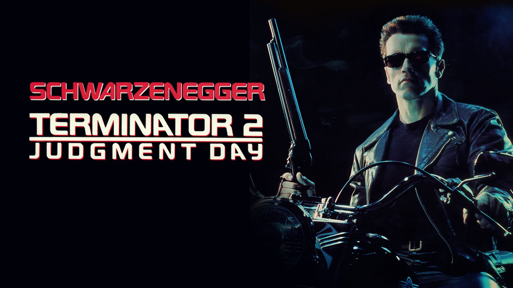
▶ PLAYTerminator 2 : Le Jugement Dernier
1991 — James Cameron · Arnold Schwarzenegger
Saison Spéciale — La Saga Alien
3 / 4 ÉPISODES EN LIGNE ▶ PLAY
▶ PLAYAlien, le huitième passagerAlien
1979 — Ridley Scott · Sigourney Weaver
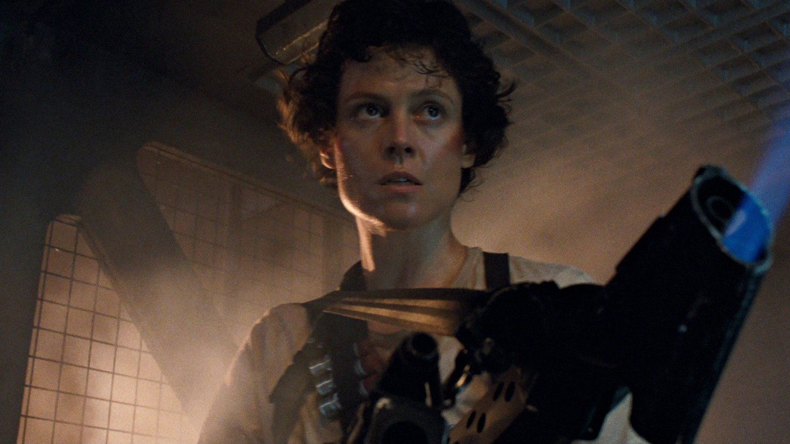
▶ PLAYAliens, le retourAliens
1986 — James Cameron · Sigourney Weaver
 ▶ PLAY
▶ PLAYAlien 3
1992 — David Fincher · Sigourney Weaver
▶▶ AU PROGRAMME · 1 CASSETTE À VENIR
- EP. 04Alien, la résurrectionAlien Resurrection
Saison Spéciale — La Trilogie Indiana Jones
3 / 3 ÉPISODES EN LIGNE ▶ PLAY
▶ PLAYLes Aventuriers de l'arche perdueRaiders of the Lost Ark
1981 — Steven Spielberg · Harrison Ford, Karen Allen
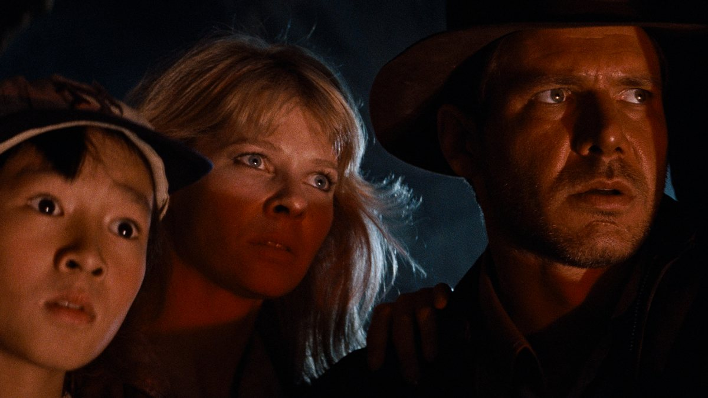
▶ PLAYIndiana Jones et le Temple mauditIndiana Jones and the Temple of Doom
1984 — Steven Spielberg · Harrison Ford, Kate Capshaw
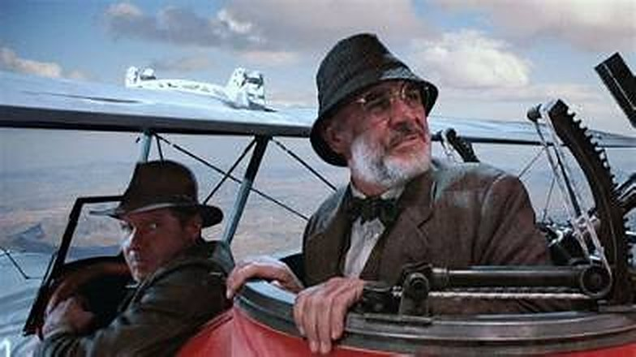
▶ PLAYIndiana Jones et la Dernière CroisadeIndiana Jones and the Last Crusade
1989 — Steven Spielberg · Harrison Ford, Sean Connery
Saison 2
12 / 12 ÉPISODES EN LIGNE ▶ PLAY
▶ PLAYVengeance FroideHeaven's Prisoners
1996 — Phil Joanou · Alec Baldwin, Eric Roberts
 ▶ PLAY
▶ PLAYÀ couteaux tirésThe Edge
1997 — Lee Tamahori · Anthony Hopkins, Alec Baldwin
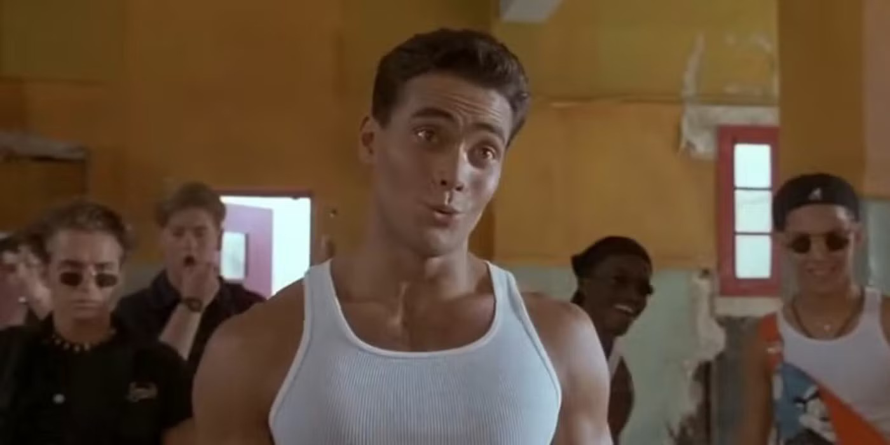
▶ PLAYOnly the Strong
1993 — Sheldon Lettich · Mark Dacascos
 ▶ PLAY
▶ PLAYAdventures in Babysitting
1987 — Chris Columbus · Elisabeth Shue
 ▶ PLAY
▶ PLAYBreakdown
1997 — Jonathan Mostow · Kurt Russell
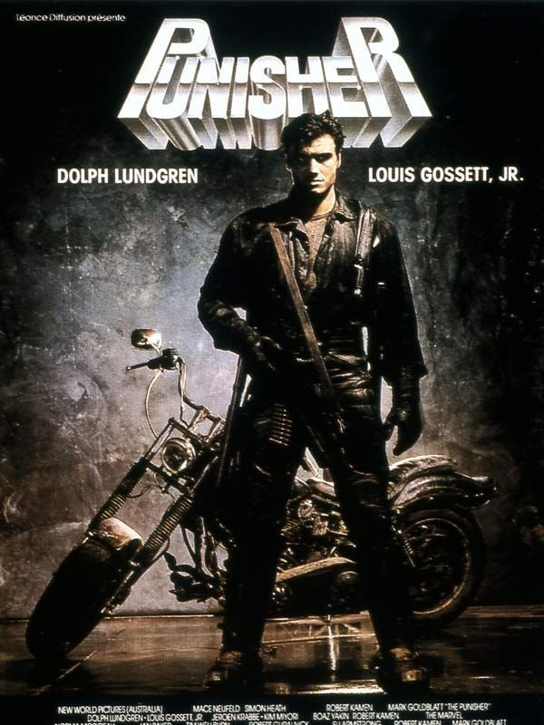
▶ PLAYThe Punisher
1989 — Mark Goldblatt · Dolph Lundgren
The Hot Spot
1990 — Dennis Hopper · Don Johnson
 ▶ PLAY
▶ PLAYPassager 57Passenger 57
1992 — Kevin Hooks · Wesley Snipes
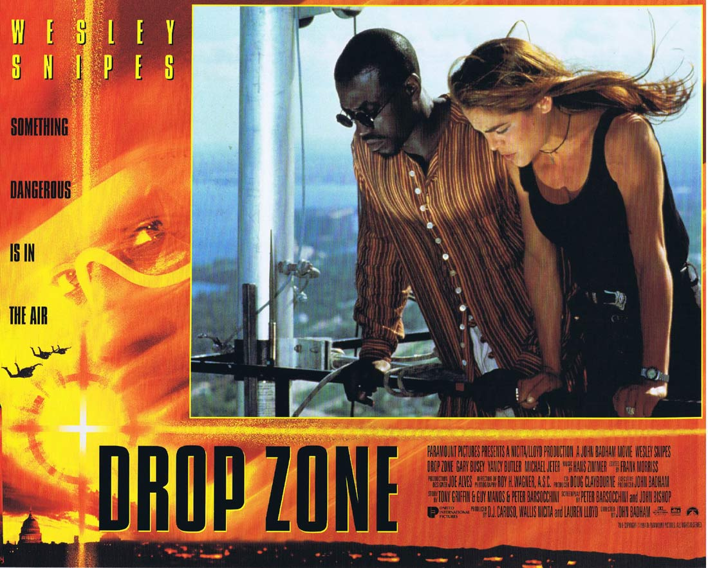
▶ PLAYDrop Zone
1994 — John Badham · Wesley Snipes
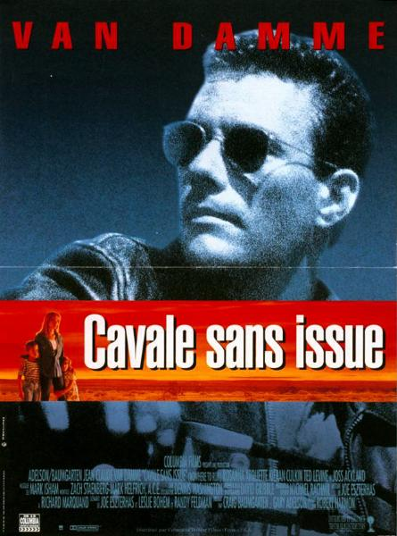
▶ PLAYCavale sans issueNowhere to Run
1993 — Robert Harmon · Jean-Claude Van Damme
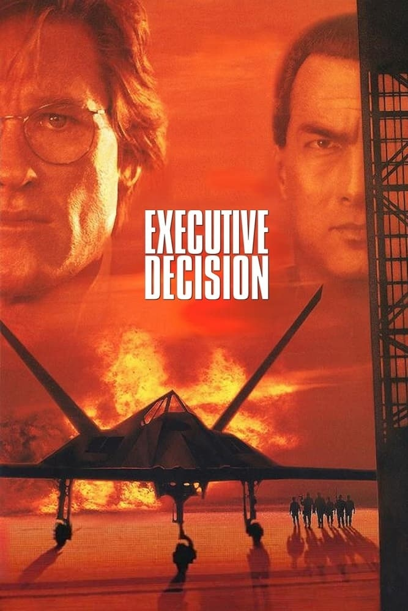
▶ PLAYExecutive Decision
1996 — Stuart Baird · Kurt Russell, Steven Seagal
 ▶ PLAY
▶ PLAYTurbulence
1997 — Robert Butler · Ray Liotta
Saison 3
5 / 12 ÉPISODES EN LIGNE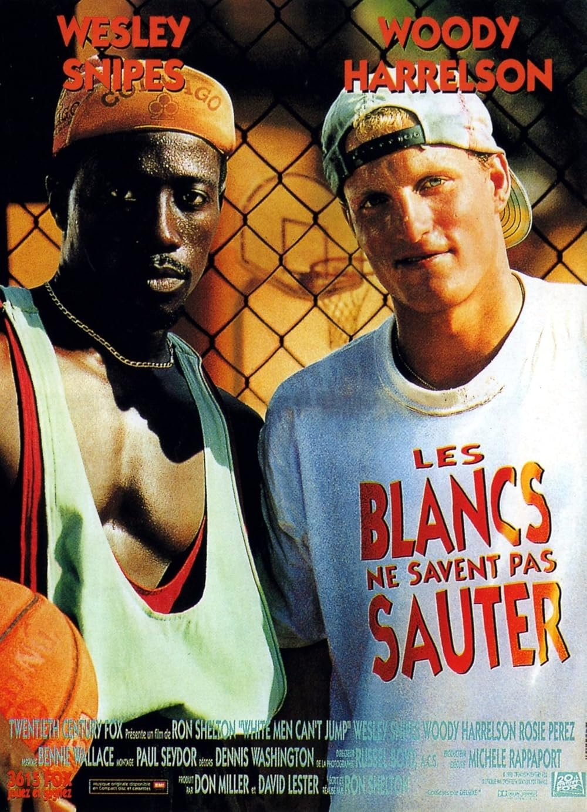
▶ PLAYLes blancs ne savent pas sauterWhite Men Can't Jump
1992 — Ron Shelton · Wesley Snipes, Woody Harrelson
 ▶ PLAY
▶ PLAYFair Game
1995 — Andrew Sipes · Cindy Crawford, William Baldwin
 ▶ PLAY
▶ PLAYAlarme fataleLoaded Weapon 1
1993 — Gene Quintano · Emilio Estevez, Samuel L. Jackson
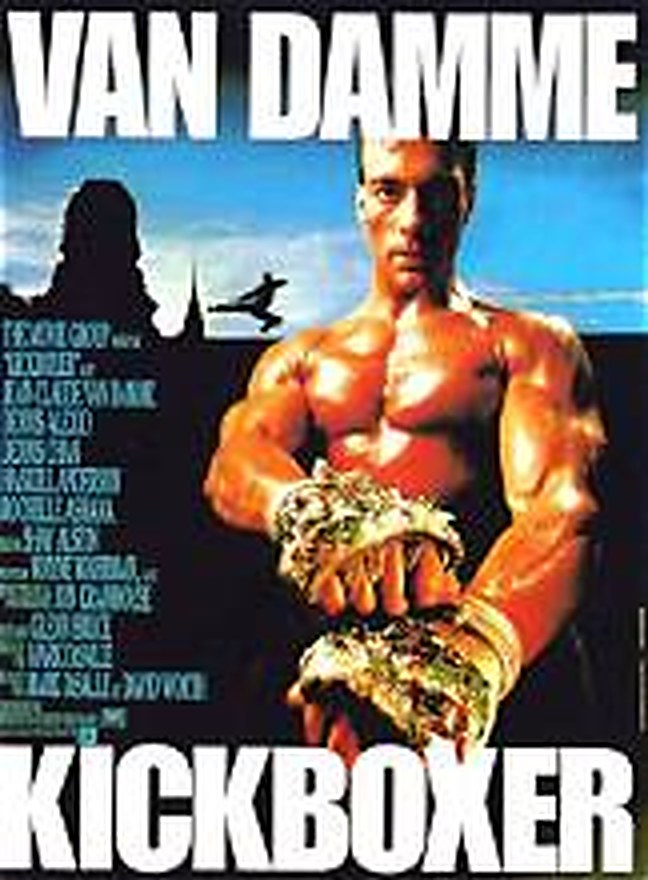
▶ PLAYKickboxer
1989 — Mark DiSalle, David Worth · Jean-Claude Van Damme
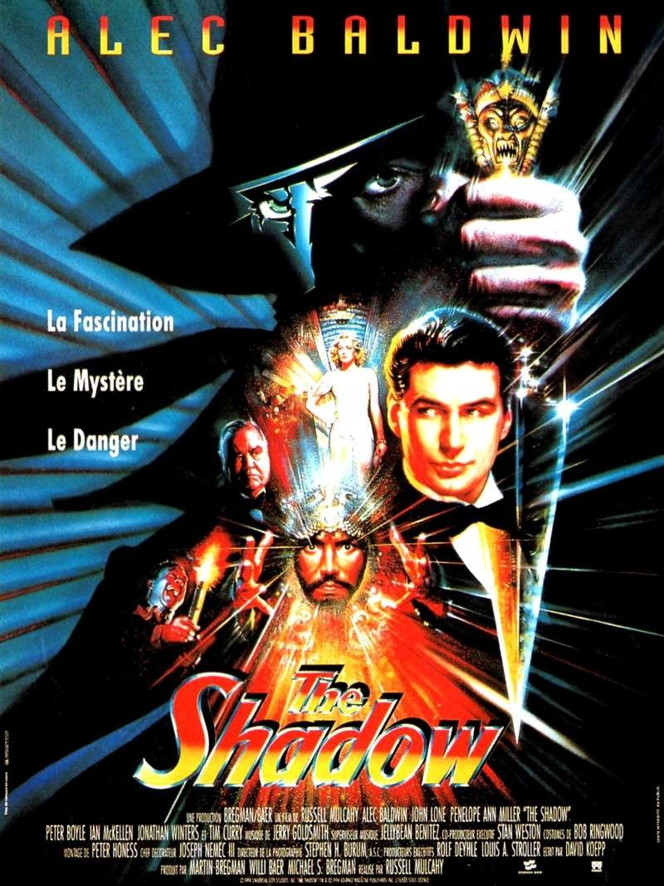
▶ PLAYThe Shadow
1994 — Russell Mulcahy · Alec Baldwin
▶▶ AU PROGRAMME · 7 CASSETTES À VENIR
- EP. 05Bloodsport
- EP. 06Double Impact
- EP. 08RoboCop
- EP. 09True Lies
- EP. 10Les Tortues Ninjas
- EP. 11Sidekicks
- EP. 12Portrait — Jean-Claude Van Damme
Saison 4
0 / 12 ÉPISODES EN LIGNE▶▶ SAISON EN PRÉPARATION · AU PROGRAMME · 12 CASSETTES À VENIR
- EP. 01Terminal Velocity
- EP. 02Étroite surveillance
- EP. 03Indiscrétion assurée
- EP. 04Kickboxer 5 : Le Dernier Combat
- EP. 05Chasse à l'homme
- EP. 06Blade
- EP. 07Cliffhanger
- EP. 08Au revoir à jamais
- EP. 09New York 1997
- EP. 10Cœur de tonnerre
- EP. 11Desperado
- EP. 12Piège en haute mer